Affectionate and good natured describes the Siberian Husky. Generally, they do well with children although young children should never be left alone with any breed. They also get along with people and do well in homes with multiple dogs. Siberian Huskies were bred to need very little food to survive.
Weight: 35 to 60 pounds
Height: 20 to 23 inches tall at the shoulder
 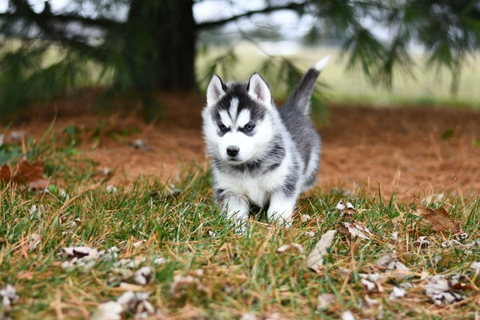
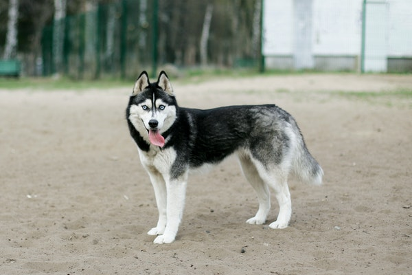
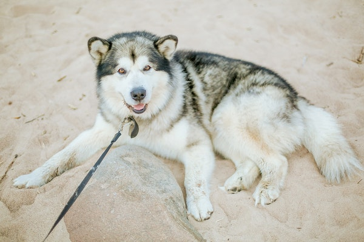
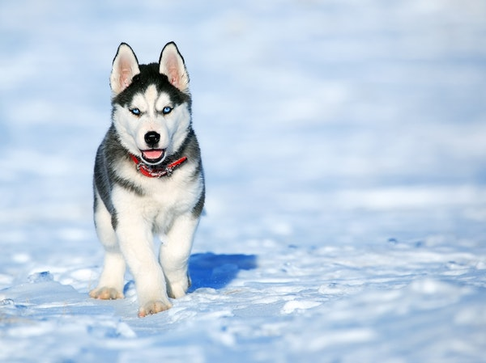
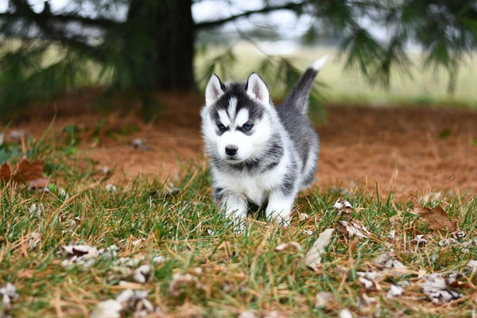
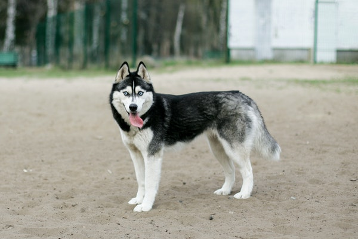
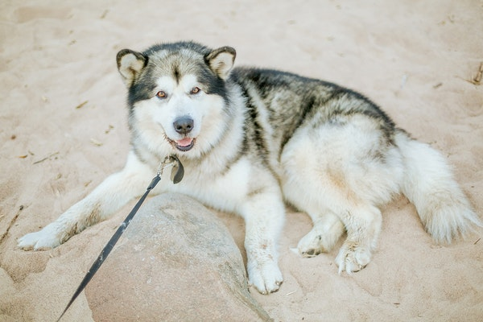
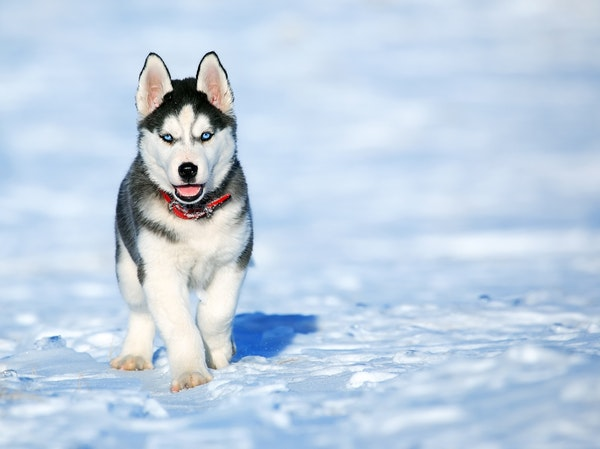
Bull and terrier breeds were created in early 19th-century England for the popular spectator sports of bull- and bear-baiting. When those sports were deemed inhumane and became illegal 1835, dog-fighting sprung up in its place — and thus was the trait for dog aggression bred into the genetic line. But another part of this breed's genetic makeup is an unwillingness to bite humans. Handlers reaching into the dog-fighting rings wanted to be able to separate dogs without getting hurt themselves. Quite soon the breed developed a reputation as a strong, protective dog, but one also known for being gentle and family-friendly. When these "bull dogs" accompanied immigrants to America they began new careers as all-around farm dogs. Their jobs included hunting wild game, guarding the property from animal intruders, and providing companionship. In keeping with the "bigger is better" mindset of their new country, the settlers developed a dog larger than it had been in England. In 1898 the UKC, Britain's equivalent of the AKC, named these bull dogs the American Pit Bull Terrier. The AKC decided to recognize the breed in the early 1930s — but under a new name. Intending to separate it from its pit-fighting past, the AKC named it the American Staffordshire Terrier. Since then the American Staffordshire Terrier has been bred for AKC conformation, or dog shows, while the American Pit Bull Terrier has not been. The results are very slight differences in build and in personality.
size
Height of 18 to 19 inches for males
17 to 18 inches for females.
Weight ranges from 30 to 85 pounds.
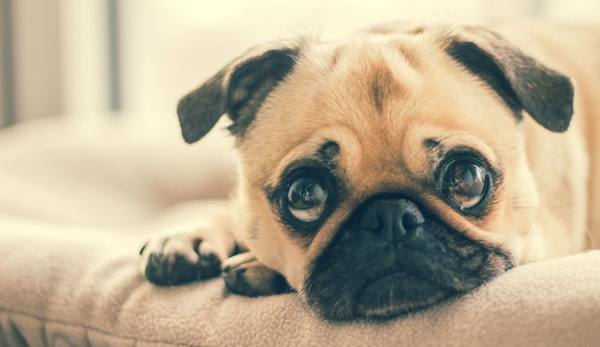 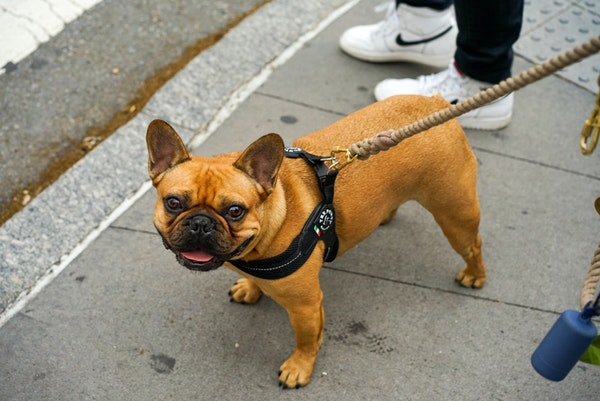 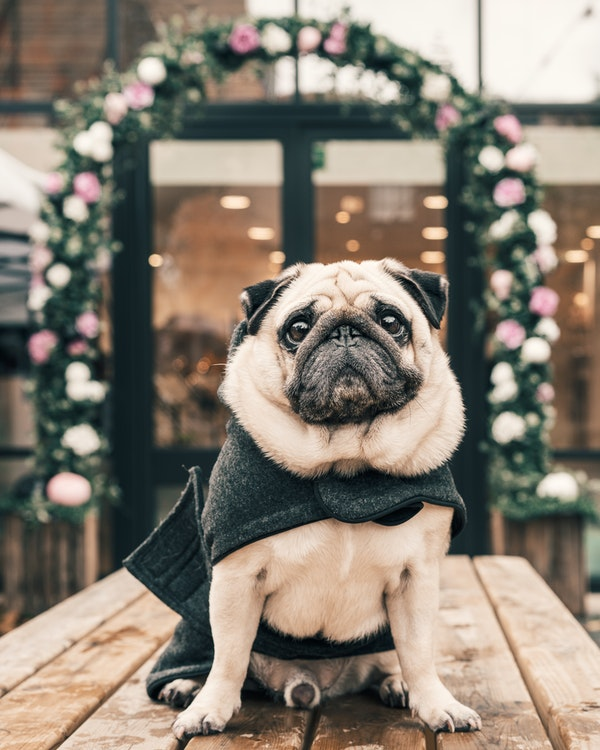 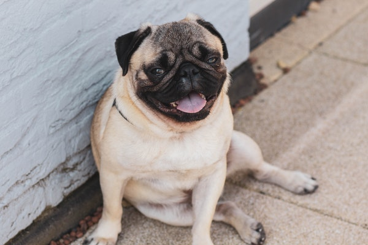Hound dogs hunt either by sight or sound, but all have one trait in common, stamina. These dog breeds include the Sighthounds, Scent Hounds, and those that hunt by both sight and scent including the Spitz Hounds Many Hound dogs make very good companions. The Scent hounds for example, are very much like rambunctious children. Yet some of the hound dogs would rather be hunting than anything else. These dogs some may seem a bit distant and aloof, that is part of their nature. Focused hunting dogs, especially the Spitz, can have a very hard time sitting still or paying attention. Their minds are actively seeking and they are instinctively ready for the chase.
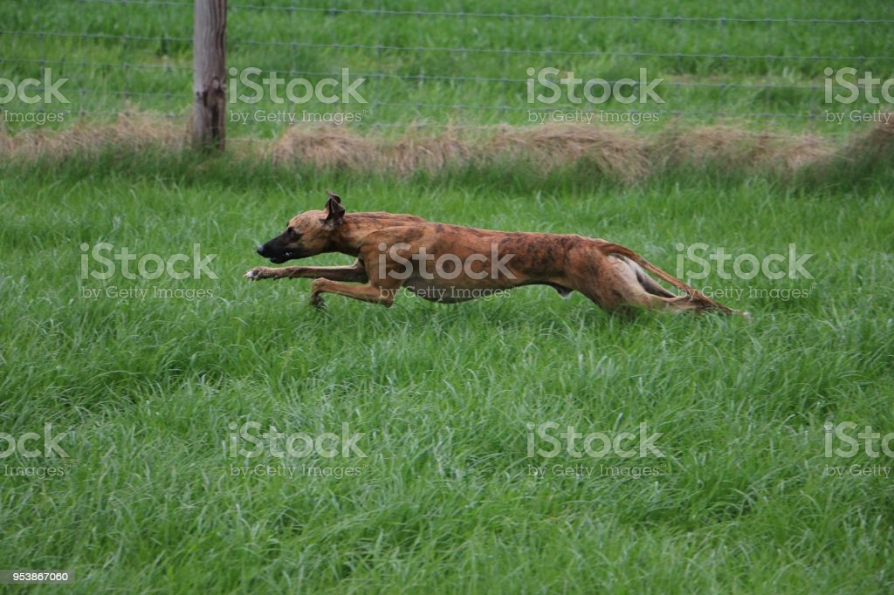 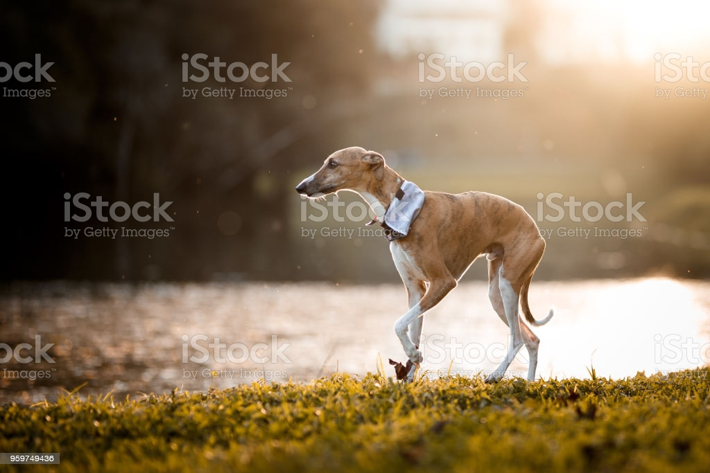 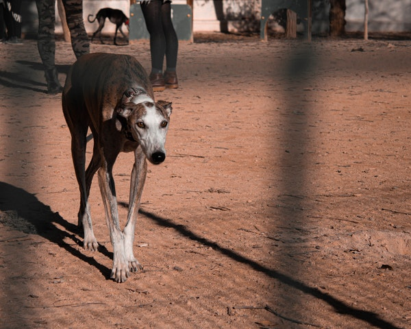 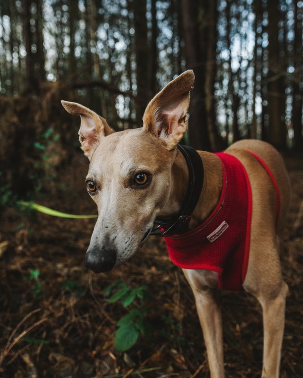